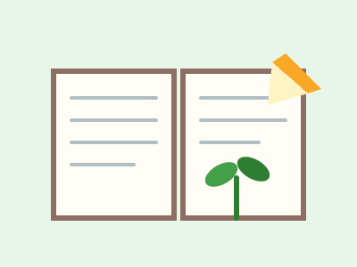

Tâches de la semaine
0 tâche sur 5
Nouvelle observation
Mes observations 0
Le carnet est vide. Ajoutez votre première observation !

Jardin pédagogique de la ferme-école
Notez vos observations et cochez les tâches de la semaine : le carnet se souvient de tout, même si vous fermez la page.
0 tâche sur 5
Le carnet est vide. Ajoutez votre première observation !